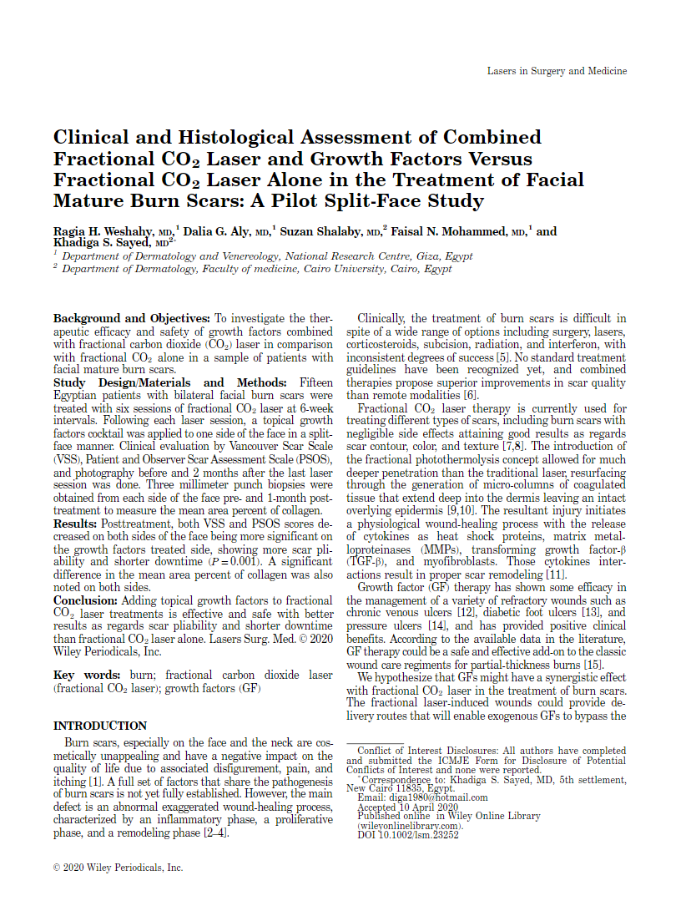

View in website
Chapter 12 / 16, Page 243 / 290
Next page
Previous page
Next chapter
Previous chapter
Chapter
Page
Go to
PDF
722.2 KB
ePub
22.3 KB
Previous chapter
Food Waste (Pages: 143-163)
Next chapter
Sustainable Food Consumption and the Potential of the Principles (Pages: 189-201)

Previous chapter
Food Waste (Pages: 143-163)
Next chapter
Sustainable Food Consumption and the Potential of the Principles (Pages: 189-201)